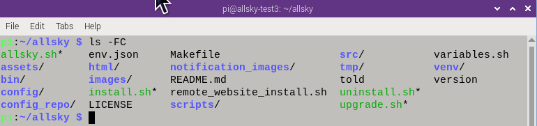
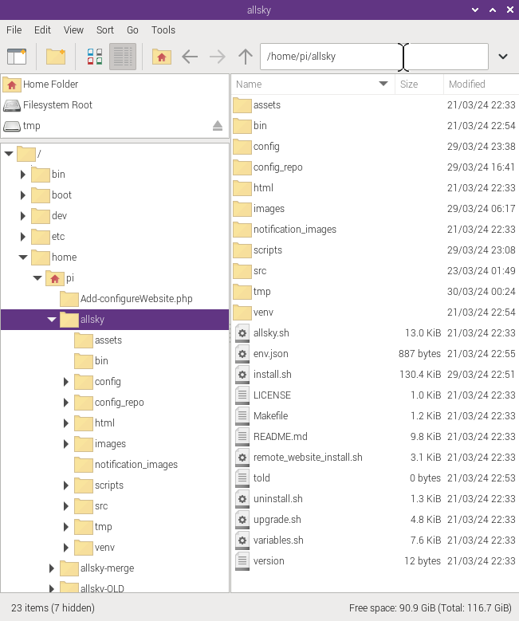

When you install Allsky it put its files and directories in the allsky directory of the login you installed it with, typically pi. That directory is usually referred to as ~/allsky.
Ever wonder what all the files and directories are in the ~/allsky directory? Read on.
This is a typical view of the ~/allsky directory: 
Notice the colors?
The ls (list files)
command displays executable programs in green,
directories in blue,
and "regular" files in black.
Here's what's in the directory:
- allsky.sh
This is the program that's executed when you start Allsky. It calls the appropriate program to take pictures. - assets
Contains files used by the developers in creating Allsky as well as images used by the README.md file. You can ignore this directory. - bin
This holds all the binary files (files created by compiling source code), for example capture_RPi and capture_ZWO are the programs that read your settings and take pictures, storing them in the tmp directory, described below. - config
Contains all the configuration files. Some of the files in this directory include:- settings.json is updated via the Allsky Settings page in the WebUI and contains most of the settings used by Allsky. This file is linked to a file that contains your camera type and camera model in the file name.
- The modules and overlay directories contain the configuration files for the Module Manager and Overlay Editor, respectively.
- cc.json (camera capabilities) and options.json are created as part of the installation based on what capabilities your camera has, and determine what settings you see in the WebUI as well as their minimum, maximum, and default values. If you change cameras via the WebUI, these files are re-created.
- If you have a remote Allsky Website a remote_configuration.json file will exist that's uploaded to the remote server whenever you change it via the WebUI's Editor page.
- config_repo
This holds "templates" of the configuration files. Copies of most of these files are updated and stored in the config directory during installation. - darks
This holds optional dark frames which are used to decrease noise in pictures. - env.json
This file contains private settings used to upload files such as user names and passwords. These settings are in a separate file so you can safely upload the settings.json file to GitHub without exposing sensitive information.
The data in this file is updated via the WebUI. - html
All the WebUI and local Allsky Website files are here. The WebUI itself doesn't have a configuration file, but a local Allsky Website has configuration.json which is updated via the WebUI's Editor page.
The Allsky Documentation is also in this directory. - images
This holds all the daily images, keograms, startrails, and timelapse videos for as long as you have specified in the Days To Keep setting in the WebUI. Each day's files are stored in a subdirectory called YYYYMMDD, for example, 20240710. - install.sh
The installation / upgrade script for Allsky. - LICENSE
Holds the Allsky license. If you plan to copy Allsky in part or in whole you should be aware of the license. - Makefile
This is used during installation to create directories and binary files and perform other tasks. You can ignore this file. - notification_images
Holds all the images such as "Allsky software is starting up". There are both .jpg and .png files, depending on whether your image is called image.jpg or image.png. - README.md
A file containing information about Allsky. You'll normally view the Allsky Documentation via the WebUI's Documentation link instead of this file. - remoteWebsiteInstall.sh
The program used to prepare an optional remote Allsky Website. This should only be run after viewing the Allsky Website Installation page for instructions on installing a remote Allsky Website. - scripts
Holds all the scripts (i.e., programs) used by Allsky while it's running. Several scripts can be manually executed for debugging purposes, per the documentation. For example runningtestUpload.shmanually can help debug upload problems. - src
Holds the source code for the capture, keogram, startrails, and sunwait programs. - tmp
Hold temporary files, including most log files, used by Allsky while it's running. The contents of this directory are usually cleaned out after a reboot. - upgrade.sh
Do not use - it's incomplete and for developer testing only.
When finished, this script will perform all steps needed to upgrade the existing Allsky to the newest version. - uninstall.sh
A VERY BASIC uninstallation script that hasn't been tested much. - variables.sh
Defines a lot of variables used by other programs. These variables define where various files and directories are. Super advanced users who want to put items in different locations can create a config/uservariables.sh file to define their own locations.
Note that although this has a .sh extension which indicates it's a shell script, it's colored in black which means it is NOT executable. This script is only included in other scripts, never executed on its own. - venv
You can ignore this directory. It holds Python configuration data used by Allsky. - version
A file that holds the version of Allsky you're running.
Unless instructed to by an Allsky developer, you should never manually edit any Allsky files; instead, use the WebUI.
File Explorer View
If you log into the Pi desktop you can use its File Explorer to view directories and files. This is similar to Window's File Explorer so may be easier for people not familar with Linux.
Here's its view of the ~/allsky directory: 